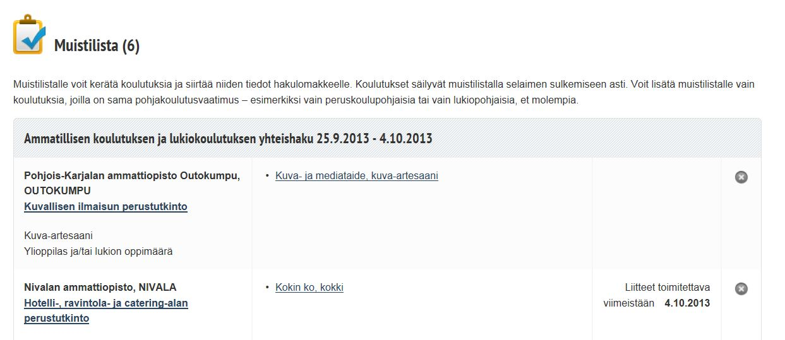

Så här söker du till yrkesutbildning i gemensam ansökan
I gemensam ansökan till yrkesutbildning 25.9–4.10 kan du söka till yrkesinriktade grundexamina, som inleds i januari 2014. I ansökan ingår både grundskol- och gymnasiebaserade utbildningar.
Observera
- Du kan inte söka via gemensam ansökan ifall du redan har en yrkesexamen eller högskolexamen. Du hittar lämpliga vuxenutbildningar på läroanstalternas hemsidor.
- Du kan inte söka till grundskolbaserad utbildning om du har gått ut gymnasiet.
Läs dessa anvisningar i sin helhet så du vet hur du hittar utbildningar och söker till dem.
Hitta utbildningar genom att söka på ord
- Du kan söka enligt ord på varje sida. Skriv i sökfältet exempelvis yrke, utbildning, läroanstalt eller bransch.
- På sökresultatsidan kan du avgränsa sökträffarna genom att kryssa för din egen grundutbildning, om sökträffarna är för många.
Läs beskrivningar av utbildningar
- Via länkarna på sökträffsidan öppnas närmare beskrivningar av utbildningarna. Uppgifter om det centrala i varje utbildning presenteras.
- Observera att det finns tre (3) flikar på sidan: Beskrivning av utbildningen, Antagningsgrunder och inträdesprov, Läroanstalt
- Under ansökningstiden syns en grön ikon med texten Ansökan pågår i Grundutbildningsfönstret. Om ikonen är grå, kommer utbildningen att ingå i en senare ansökan, vars ansökningstid inte har börjat.
- Du söker vanligen till en grundexamen. Utbildningsprogrammet väljer du vanligen under studierna. I vissa fall kan man också söka direkt till ett utbildningsprogram.
Jämför alternativ
- Samla utbildningar i minneslistan. Listan har du nytta av då du planerar dina ansökningar.
- Via minneslistan kan du gå till beskrivningarna av utbildningarna. I minneslistan kan du lägga till alla alternativ som intresserar dig och senare ta bort sådana som efter en närmare granskning inte längre känns så aktuella för dig.
- Utbildningarna raderas från listan när du stänger minneslistan, Studieinfo eller webbläsaren.
- Vink: Du kan printa ut minneslistan.
Lämna fem utbildningar i minneslistan och klicka på knappen Fyll i ansökningsblanketten. Utbildningarna överförs till ansökningsblanketten. Du kan granska dem i ansökningsblanketten under rubriken Ansökningsönskemål.
Fyll i ansökningsblanketten
- Leta fram grundskolans eller gymnasiets avgångsbetyg och eventuella arbetsintyg innan du fyller i ansökningsblanketten. Du behöver dem då du fyller i ansökningsblanketten.
- Du kan under ansökningstiden välja en utbildning till ansökningsblanketten också genom att på sidan med beskrivningar av utbildningar klicka på knappen Sök till utbildning.
- Fyll i ansökningsblanketten steg för steg. Tjänsten hjälper dig att fylla i ansökningsblanketten rätt. Med en och samma blankett kan du söka till högst fem utbildningar.
Kom ihåg att sätta utbildningarna i den ordning du önskar med hjälp av pilarna i ansökningsblanketten
- Du kan fylla i ansökningsblanketten för gemensam ansökan endast en gång. Kom därför ihåg att ange alla de utbildningar du vill söka till i ansökningsblanketten.
- Kom ihåg att sätta utbildningarna i den ordning som du önskar, så att det önskemål som finns överst på blanketten är ditt första önskemål. Du antas till det högsta önskemålet som dina poäng räcker till. Alla lägre ansökningsönskemål annulleras.
- Du kan inte ändra dina ansökningsönskemål efter ansökningstiden.
Ta emot studieplatsen
- Du får av läroanstalten ett brev med ditt antagningsresultat och information om hur du ska ta emot studieplatsen och anmäla dig till utbildningen.
- Ta emot studieplatsen enligt läroanstaltens anvisningar.
- Anmäl dig hos läroanstalten.
Om du inte fick studieplats?
- Om du inte blev vald till utbildningen får du ett efterhandledningsbrev med ditt poängantal och eventuell placering på reservplats
- Information om lediga platser finns i Studieinfo.
- Sök via sökmotorn utbildningar, där det finns lediga platser.
- Vink: Du kan ännu i början av terminen fråga efter lediga studieplatser hos läroanstalterna.
Har du frågor om ansökan?
Om du har frågor om ansökan – om gemensam ansökan eller hur du ska fylla i ansökningsblanketten - kan du ställa dem till Studieinfos rådgivningstjänst.
Telefon: 029 533 1010
- öppen vardagar 9–13
- under den sista ansökningsdagen 9 – 16.15
- telefonavgift i Finland lokalnätsavgift/mobiltelefonavgift.
E-post: info@studieinfo.fi